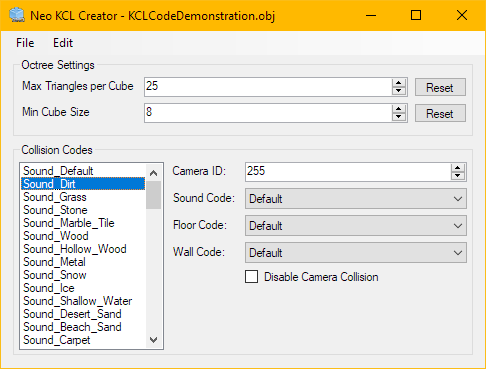
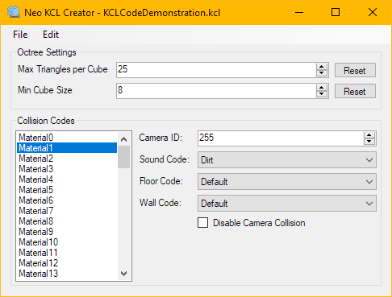

NeoKCLCreate is a Windows application for Importing and Exporting KCL files for use with Super Mario Galaxy 2. Here is an overview of NeoKCLCreate and a description of its main features.
To create a new KCL, click on File, then click on New (Or press [CTRL]+[N] on your keyboard).
From here, you can assign Collision codes on the right.
When you are done, click on File, then click on Save or Save As (Or press [CTRL]+[S] on your keyboard. [CTRL]+[SHIFT]+[S] for Save As).

To export a KCL, click on File, then click on Open (Or press [CTRL]+[O] on your keyboard).
After it loads, click on File, then click on Export (Or press [CTRL]+[E] on your keyboard).
This will export the KCL to a Wavefront Obj that you can open in a model viewer
